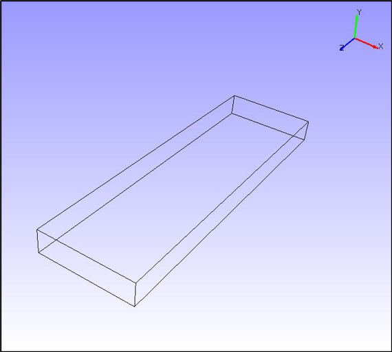

Move Model As
VCollab Pro users can set different performance modes of rendering while interacting with a scene through a motion model using Move Model As. The options found under this tool increase performance during the motion model.

Options
- As Is: This is the default option and lets a user to change from any other performance mode to current display mode.
- Single Bounding box: A single bounding box which contains all parts of the model displayed in motion model.
- Part Bounding boxes: Individual bounding boxes are displayed for each part in the motion model.
- Detail culled: This helps users to view parts based on the model volume. Users can view parts which are equal or above volumetrically with model volume. The default detail cull percentage is 30%.
- Feature Edges: Shows model feature edges during motion model.
As Is or Normal
Single Bounding Box

Part Bounding Box

30% Detailed cull Performance
Feature Edges